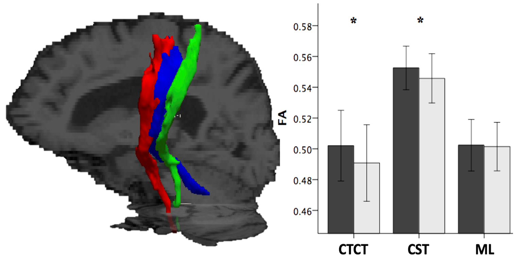
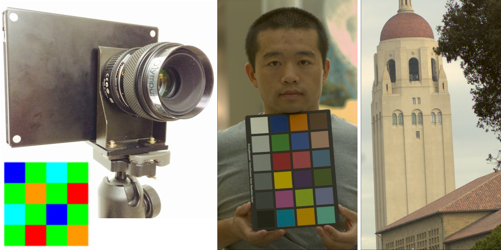

Publications
Full list at PubMed, Google Scholar, Google Patents
|  | Changes in the Cerebello-thalamo-cortical Network after MR-guided Focused Ultrasound Thalamotomy [PDF]
|
{kind=link}
SDnDTI: Self-supervised Deep Leaning-based Denoising for Diffusion Tensor MRI [PDF] [Tutorial 1] [Tutorial 2] [Codes]
|
{kind=link}
Comprehensive Diffusion MRI Dataset for In Vivo Human Brain Microstructure Mapping using 300 mT/m Gradients [PDF] [Dataset]
|
{kind=link}
High-fidelity Fast Volumetric Brain MRI using Synergistic Wave-controlled Aliasing in Parallel Imaging and a Hybrid Denoising Generative Adversarial Network [PDF] [Video] [Codes]
|
{kind=link}
Improved Cortical Surface Reconstruction using Sub-millimeter Resolution MPRAGE by Image Denoising [PDF]
|
{kind=link}
Improving In Vivo Human Cerebral Cortical Surface Reconstruction using Data Driven Super-resolution [PDF] [Video1] [Video2]
|
{kind=link}
DeepDTI: High-fidelity Six-direction Diffusion Tensor Imaging using Deep Learning [PDF] [Video1] [Video2] [Tutorial] [Codes]
|
{kind=link}
Generalized Diffusion Spectrum Magnetic Resonance Imaging (GDSI) for Model-free Reconstruction of the Ensemble Average Propagator [PDF] [Tutorial] [Codes]
|
{kind=link}
 |
Diffusion MRI Tractography for Improved Transcranial MRI-guided Focused Ultrasound Thalamotomy Targeting for Essential Tremor [PDF] [Video] [Codes]
|
Q-Space Truncation and Sampling in Diffusion Spectrum Imaging [PDF] [Codes]
|
{kind=link}
|  | Automatically Designing an Image Processing Pipeline for a Five-band Camera Prototype using the Local, Linear, Learned (L3) Method [PDF]
|
{kind=link}
Automating the Design of Image Processing Pipelines for Novel Color Filter Arrays: Local, Linear, Learned (L3) Method [PDF] [Slides]
|
{kind=link}
GPU-accelerated Local Tone-mapping for High Dynamic Range Images [PDF]
|
{kind=link}
Co-authored Papers
High-fidelity, High-spatial-resolution Diffusion MRI of the Ex-vivo Whole Human Brain on the 3T Connectome Scanner using Structured Low-rank EPI Ghost Correction
Ramos-Llordén G, Lobos RA, Kim TH, Tian Q, Witzel T, Lee HH, Keil B, Yendiki A, Bilgic B, Haldar JP, Huang SY
NMR in Biomedicine, 2022
Wave-Encoded Model-based Deep Learning for Highly Accelerated Imaging with Joint Reconstruction
Cho J, Gagoski B, Kim TH, Tian Q, Frost SR, Chatnuntawech I, Bilgic B
arXiv Preprint, 2022; arXiv: 2202.02814
Static and Dynamic BOLD fMRI Components along White Matter Fibre Tracts and Their Dependence on the Orientation of the Local Diffusion Tensor Axis Relative to the B0-Field
Viessmann O, Tian Q, Bernier M, Polimeni JR
Journal of Cerebral Blood Flow and Metabolism, 2022
Estimating Axial Diffusivity in the NODDI Model
Howard AFD, Cottaar C, Drakesmith M, Fan Q, Huang SY, Jones DK, Lange FJ, Mollink J, Rudrapatna SU, Tian Q, Miller KL, Jbabdi S
NeuroImage, 2022; 262: 119535
Highly Accelerated EPI with Wave Encoding and Multi-shot Simultaneous Multi-Slice Imaging
Cho J, Liao C, Tian Q, Zhang Z, Xu J, Lo W, Poser BA, Stenger VA, Stockmann J, Setsompop K, Bilgic B
Magnetic Resonance in Medicine, 2022; 88 (3): 1180-1197
Diffusion MRI Using 300 mT/m Gradient Strength: Methodological Advances and Scientific Impacts
Fan Q, Eichner C, Mueller L, Afzali M, Tax C, Davids M, Mahmutovic M, Keil B, Bilgic B, Setsompop K, Tian Q, Maffei C, Llorden GR, Lee HH, Nummenmaa A, Witzel T, Yendiki A, Huang CC, Lin CP, Weiskopf N, Anwander A, Jones DK, Rosen BR, Wald LL, Huang SY
NeuroImage, 2022; 254: 118958
Connectome 2.0: Developing the Next-generation Ultra-high Gradient Strength Human MRI Scanner for Bridging Studies of the Micro-, Meso- and Macro-connectome
Huang SY, Witzel T, Keil B, Scholz A, Davids M, Dietz P, Rummert E, Ramb R, Kirscha JE, Yendiki A, Fan Q, Tian Q, Llorden GR, Lee HH, Nummenmaa A, Bilgic B, Setsompop K, Wang F, Avram AV, Komlosh M, Benjamini D, Magdoom KN, Pathak S, Schneider W, Novikov D, Fieremans E, Mekkaoui C, Augustinack J, Fischl B, Berger D, Shapson-Coe A, Lichtman J, Basser PJ, Wald LL, Rosen BR
NeuroImage, 2021; 243: 118530
Dissecting Whole-brain Conduction Delays through MRI Microstructural Measures
Mancini M, Tian Q, Fan Q, Cercignani M, Huang SY
Brain Structure and Function, 2021; 226: 2651–2663
Scan-Rescan Repeatability of Axonal Metrics using High-Gradient Diffusion MRI and Implications for Study Design
Fan Q, Polackal NM, Tian Q, Ngamsombat C, Nummenmaa A, Witzel T, Klawiter EC, Huang SY
NeuroImage, 2021; 240: 118323
A 48-channel Receive Array Coil for Mesoscopic Diffusion-weighted MRI of Human Ex Vivo Brain Imaging at the 3T Connectome Scanner
Scholz A, Etzel R, May MW, Mahmutovic M, Tian Q, Llorden GR, Bilgic B, Witzel T, Stockmann JP, Mekkaoui C, Wald LL, Huang SY, Yendiki A, Keil B
NeuroImage, 2021; 238: 118256
Evaluation of Ultrafast Wave-CAIPI 3D FLAIR in the Visualization and Volumetric Estimation of Cerebral White Matter Lesions
Ngamsombat C, Filho ALMG, Longo MGF, Cauley SF, Setsompop K, Kirsch JE, Tian Q, Fan Q, Polak D, Liu W, Lo W, González RG, Schaefer PW, Rapalino O, Conklin J, Huang SY
American Journal of Neuroradiology, 2021; 42 (9) 1584–1590
In Vivo Human Whole-brain Connectom Diffusion MRI Dataset at 760 μm Isotropic Resolution
Wang F, Dong Z, Tian Q, Liao C, Fan Q, Hoge WS, Ngamsombat C, Keil B, Polimeni JR, Wald LL, Huang SY, Setsompop K
Scientific Data, 2021; 8 (1): 1–12
Distortion-free, High-isotropic-resolution Diffusion MRI with gSlider BUDA-EPI and Multi-coil Dynamic B0 Shimming
Liao C, Bilgic B, Tian Q, Stockmann J, Cao X, Fan Q, Iyer SS, Wang F, Ngamsombat C, Lo WC, Manhard MK, Huang SY, Wald LL, Setsompop K
Magnetic Resonance in Medicine, 2021; 86 (2): 791–803
Comparison of Diffusion MRI and CLARITY Fiber Orientation Estimates in Both Gray and White Matter Regions of Human and Primate Brain
Leuze CWU*, Goubran M*, Barakovic M* (*Co-first Author), Aswendt M, Tian Q, Hsueh B, Crow A, Weber E, Steinberg G, Zeineh M, Plowey ED, Daducci A, Innocenti G, Thiran J-P, Deisseroth K, McNab JA
NeuroImage, 2021; 228: 117692
RUN-UP: Accelerated Multi-shot Diffusion-weighted MRI Reconstruction using an Unrolled Network with U-Net as Priors
Hu Y, Xu Y, Tian Q, Chen F, Shi X, Moran CJ, Daniel BL, Hargreaves BA
Magnetic Resonance in Medicine, 2021; 85 (2): 709–720
Axon Diameter Index Estimation Independent of Fiber Orientation Distribution using High-gradient Diffusion MRI
Fan Q, Nummenmaa A, Witzel T, Ohringer N, Tian Q, Setsompop K, Klawiter EC, Rosen BR, Wald LL, Huang SY
NeuroImage, 2020; 222: 117197
Evaluation of Ultrafast Wave-CAIPI MPRAGE for Visual Grading and Automated Measurement of Brain Tissue Volume
Longo MGF, Conklin J, Cauley SF, Setsompop K, Tian Q, Polak D, Splitthoff D, Liu W, González RG, Schaefer PW, Kirsch JE, Rapalino O, Huang SY
American Journal of Neuroradiology, 2020; 41 (8): 1388–1396
Localizing Central Swallowing Functions by Combining Non-invasive Brain Stimulation with Neuroimaging
Li S, Eshghi M, Khan S, Tian Q, Joutsa JT, Ou Y, Wang Q, Kong J, Rosen BR, Ahveninen J, Nummenmaa A
Brain Stimulation, 2020; 13 (5): 1207–1210
Axonal Damage in the Optic Radiation Assessed by White Matter Tract Integrity Metrics is Associated with Retinal Thinning in Multiple Sclerosis
Ngamsombat C, Tian Q, Fan Q, Russo A, Machado N, Polackal M, George IC, Witzel T, Klawiter EC, Huang SY
NeuroImage: Clinical, 2020; 27: 102293
Resting-state “Physiological Networks”
Chen JE, Lewis LD, Chang C, Tian Q, Fultz NE, Ohringer NA, Rosen BR, Polimeni JR
NeuroImage, 2020; 213: 116707
A Nonlinear Model for Diffusion-weighted MRI Reconstruction with Magnitude-based Spatial-angular Locally Low-rank Regularization
Hu Y, Wang X, Tian Q, Yang G, Daniel B, McNab JA, Hargreaves BA
Magnetic Resonance in Medicine, 2020; 83 (5): 1596–1607
High-fidelity, High-isotropic-resolution Diffusion Imaging through gSlider Acquisition with B1+ and T1 Corrections and Integrated ΔB0/Rx Shim Array
Liao C, Stockmann J, Tian Q, Bilgic B, Arango NS, Manhard MK, Huang SY, Grissom WA, Wald LL, Setsompop K
Magnetic Resonance in Medicine, 2020; 83 (1): 56–67
High-gradient Diffusion MRI Reveals Distinct Estimates of Axon Diameter Index within Different White Matter Tracts in the In Vivo Human Brain
Huang SY, Tian Q, Fan Q, Witzel T, Wichtmann B, McNab JA, Bireley JD, Machado N, Klawiter EC, Mekkaoui C, Wald LL, Nummenmaa A
Brain Structure and Function, 2020; 225 (4): 1277–1291
Multimodal Image Registration and Connectivity Analysis for Integration of Connectomic Data from Microscopy to MRI
Goubran M*, Leuze CWU*, Hsueh B*, Aswendt M* (*Co-first Author), Ye L, Tian Q, Cheng MY, Crow A, Steinberg GK, McNab JA, Deisseroth K, Zeineh M
Nature Communications, 2019; 10 (1): 5504
Imaging G-Ratio in Multiple Sclerosis using High-Gradient Diffusion MRI and Macromolecular Tissue Volume
Yu F, Fan Q, Tian Q, Ngamsombat C, Machado N, Bireley JD, Russo A, Nummenmaa A, Witzel T, Wald LL, Klawiter EC, Huang SY
American Journal of Neuroradiology, 2019; 40 (11): 1871-1877
Highly Accelerated Multishot Echo Planar Imaging through Synergistic Machine Learning and Joint Reconstruction
Bilgic B, Chatnuntawech I, Manhard MK, Tian Q, Liao C, Cauley SF, Huang SY, Polimeni JR, Wald LL, Setsompop K
Magnetic Resonance in Medicine, 2019; 82 (4): 1343-1358
Multimodal Characterization of the Human Nucleus Accumbens
Cartmell SCD, Tian Q, Thio BJ, Leuze C, Ye L, Williams NR, Yang G, Ben-Dor G, Deisseroth K, Grill WM, McNab JA, Halpern CH
NeuroImage, 2019; 198: 137-149
Phase-matched Virtual Coil Reconstruction for Highly Accelerated Diffusion Echo-Planar Imaging
Liao C, Manhard MK, Bilgic B, Tian Q, Fan Q, Han S, Wang F, Park DJ, Witzel T, Zhong J, Wang H, Wald LL, Setsompop K
NeuroImage, 2019; 194: 291-302
Age-related Differences in Apparent Axon Diameter and Axon Density in the Corpus Callosum Measured by High-gradient Diffusion MRI
Fan Q, Tian Q, Ohringer NA, Nummenmaa A, Witzel T, Tobyne SM, Klawiter EC, Rosen BR, Wald LL, Salat DH, Huang SY
NeuroImage, 2019; 191: 325-336
Motion Robust Reconstruction of Multi-shot Diffusion-weighted Images without Phase Estimation via Locally Low-rank Regularization
Hu Y, Levine EG, Tian Q, Moran C, Wang X, Taviani V, Vasanawala S, McNab JA, Daniel BL, Hargreaves BA
Magnetic Resonance in Medicine, 2019; 81 (2): 1181-1190
Double Diffusion Encoding MRI for the Clinic
Yang G, Tian Q, Leuze CWU, Wintermark M, McNab JA
Magnetic Resonance in Medicine, 2018; 80 (2): 507-520
Learning the Image Processing Pipeline
Jiang H, Tian Q, Farrell JE, Wandell BA
IEEE Transaction on Image Processing, 2017; 26 (10): 5032-5042
The Separate Effects of Lipids and Proteins on Brain MRI Contrast Revealed Through Tissue Clearing
Leuze CWU, Aswendt M, Ferenczi E, Liu CW, Hsueh B, Goubran M, Tian Q, Steinberg G, Zeineh M, Deisseroth K, McNab JA
NeuroImage, 2017; 156: 412-422
Wiring and Molecular Features of Prefrontal Ensembles Representing Distinct Experiences
Ye L*, Allen WE*, Thompson KR* (*Co-first Author), Tian Q, Hsueh B, Ramakrishnan C, Wang AC, Jennings J, Adhikari A, Halpern CH, Witten IB, Barth AL, Luo L, McNab JA, Deisseroth K
Cell, 2016; 165 (7): 1776-1788
Local Linear Approximation for Camera Image Processing Pipelines
Jiang H, Tian Q, Farrell JE, Wandell BA
Proceedings of the Society for Imaging Science and Technology (IS&T), 2016; 1-4(4)
Efficient Illuminant Correction in the Local, Linear, Learned (L3) Method
Germain FG, Akinola IA, Tian Q, Lansel SP, Wandell BA
Proceedings of the International Society for Optics and Photonics (SPIE), 2015; 9404: 940404